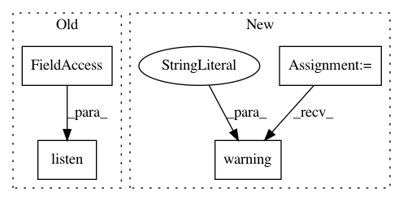

e0468f8b8e8667f05888a1ed218440d3ee2b9d31,homeassistant/__init__.py,StateMachine,track_change,#StateMachine#Any#Any#Any#Any#,678
Before Change
event.data.get("old_state"),
event.data["new_state"])
self._bus.listen(EVENT_STATE_CHANGED, state_listener)
return state_listener
After Change
DEPRECATED
_LOGGER.warning(
"hass.states.track_change is deprecated. "
"Use homeassistant.helpers.event.track_state_change instead.")
import homeassistant.helpers.event as helper
helper.track_state_change(_MockHA(self._bus), entity_ids, action,
from_state, to_state)
In pattern: SUPERPATTERN
Frequency: 3
Non-data size: 4
Instances
Project Name: home-assistant/home-assistant
Commit Name: e0468f8b8e8667f05888a1ed218440d3ee2b9d31
Time: 2015-07-26
Author: paulus@paulusschoutsen.nl
File Name: homeassistant/__init__.py
Class Name: StateMachine
Method Name: track_change
Project Name: home-assistant/home-assistant
Commit Name: 5835d502c7dd3f1e86012bd3bf2edd80eda2f1c8
Time: 2014-11-30
Author: Paulus@PaulusSchoutsen.nl
File Name: homeassistant/__init__.py
Class Name: HomeAssistant
Method Name: track_state_change
Project Name: home-assistant/home-assistant
Commit Name: e0468f8b8e8667f05888a1ed218440d3ee2b9d31
Time: 2015-07-26
Author: paulus@paulusschoutsen.nl
File Name: homeassistant/__init__.py
Class Name: HomeAssistant
Method Name: track_time_change